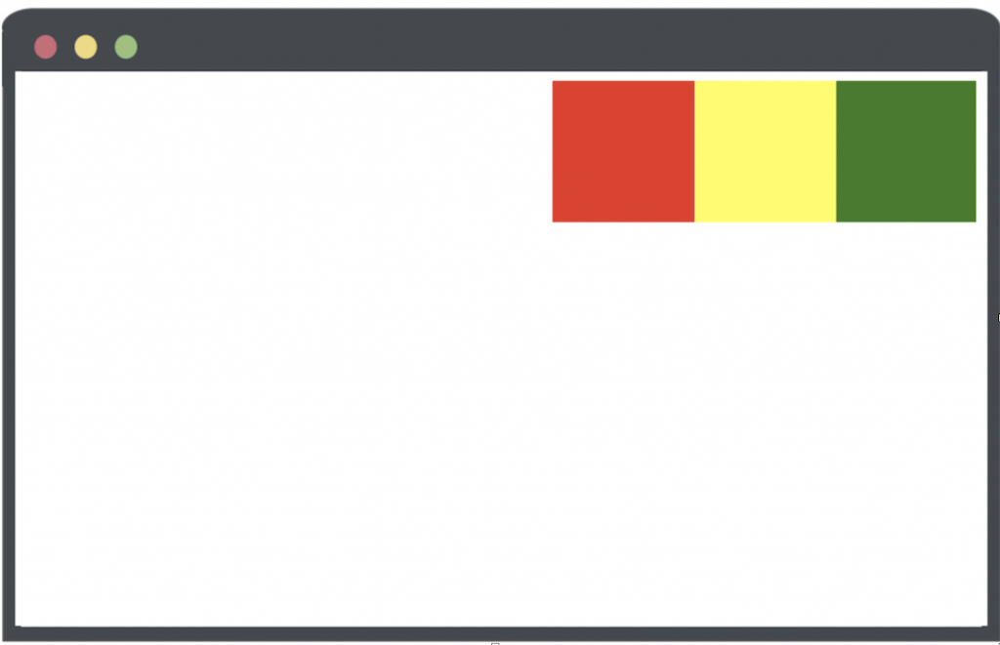

<div class="red blue">123</div>
<div class="blue red">123</div>
.red {
color: red
}
.blue {
color: blue
}
两个都是蓝色! 和引用的顺序无关 和定义的顺序有关 后面的覆盖前面的
百分比总是相对于父元素，无论是设置 font-size 或 width 等。如果父元素的相应属性，经浏览器计算后，仍无绝对值，那么 % 的实际效果等同于 默认值，如 height: 100%
不需要考虑浏览器兼容问题，因为 CSS 预处理器最终编译和输出的仍是标准的 CSS 样式。
可以在 CSS 预处理器中：使用变量、简单逻辑判断、函数等基本编程技巧。
关于 CSS 预处理器：sass、less、stylus
ID > 类 > 类型（标签） > 相邻 > 子代 > 后代 > 通配符 > 属性 > 伪类
id 选择器（#myid）
类选择器（.myclass）
属性选择器（a[rel="external"]）
伪类选择器（a:hover, li:nth-child）
标签选择器（div, h1,p）
相邻选择器（h1 + p）
子选择器（ul > li）
后代选择器（li a）
通配符选择器（*）
!important >行内样式> ID 选择器「如：#header」> 类选择器「如：.foo」> 标签选择器「如：h1」 > 通配符选择器（*）
flex).box{
display: flex | inline-flex;
}
设为 Flex 布局以后，子元素的float、clear和vertical-align属性将失效。

采用 Flex 布局的元素，称为 Flex 容器（flex container），简称"容器"。它的所有子元素自动成为容器成员，称为 Flex 项目（flex item)，简称"项目"。
容器默认存在两根轴：水平的主轴（main axis）和垂直的交叉轴（cross axis）。
项目默认沿主轴排列。单个项目占据的主轴空间叫做main size，占据的交叉轴空间叫做cross size。
.box{
display: flex | inline-flex;
flex-direction: row[从左往右] | row-reverse[从右往左] |
column[从上往下] | column-reverse[从下往上];
/* 如果一条轴线排不下，如何换行。 */
flex-wrap: nowrap[默认]不换行
| wrap 换行，第一行在上方。
| wrap-reverse 换行，第一行在下方。
/* flex-flow属性是flex-direction属性和flex-wrap属性的简写形式，默认值为row nowrap。 */
flex-flow: <flex-direction> || <flex-wrap>;
/* justify-content属性定义了item在主轴上的对齐方式 */
justify-content: flex-start [默认] 左对齐| flex-end 右对齐| center 居中|
| space-between 两端对齐，项目之间的间隔都相等。
| space-around; 每个项目两侧的间隔相等。所以，项目之间的间隔比项目与边框的间隔大一倍。
/* align-items属性定义项目在交叉轴上如何对齐。 */
align-items: flex-start 交叉轴的起点对齐
| flex-end 交叉轴的终点对齐。
| center 交叉轴的中点对齐。
| baseline 项目的第一行文字的基线对齐。
| stretch 如果项目未设置高度或设为auto，将占满整个容器的高度。;
/* align-content属性定义了多根轴线的对齐方式。如果项目只有一根轴线，该属性不起作用。 */
align-content: flex-start 与交叉轴的起点对齐。
| flex-end 与交叉轴的终点对齐。
| center 与交叉轴的中点对齐
| space-between ：与交叉轴两端对齐，轴线之间的间隔平均分布。
| space-around 每根轴线两侧的间隔都相等。所以，轴线之间的间隔比轴线与边框的间隔大一倍
| stretch（默认值）：轴线占满整个交叉轴。;
}
justify-content

align-items

align-content

.item {
/* default 0 排列顺序。数值越小，排列越靠前*/
order: <integer>;
/* 定义项目的放大比例默认为0，即如果存在剩余空间，也不放大。*/
flex-grow: <number>;
/* 属性定义了项目的缩小比例，默认为1，即如果空间不足，该项目将缩小。 如果一个项目的flex-shrink属性为0，其他项目都为1，则空间不足时，前者不缩小。*/
flex-shrink: <number>;
/* flex-basis属性定义了在分配多余空间之前，项目占据的主轴空间（main size）。浏览器根据这个属性，计算主轴是否有多余空间。它的默认值为auto，即项目的本来大小。 */
/* 它可以设为跟width或height属性一样的值（比如350px），则项目将占据固定空间。 */
flex-basis: <length> | auto; /* default auto */
/* flex属性flex-grow, flex-shrink 和 flex-basis的简写，默认值为0 1 auto。后两个属性可选。 */
flex: none | [ <'flex-grow'> <'flex-shrink'>? || <'flex-basis'> ]
/* 该属性有两个快捷值：auto (1 1 auto) 和 none (0 0 auto)。 */
/* align-self属性允许单个项目有与其他项目不一样的对齐方式，可覆盖align-items属性。默认值为auto，表示继承父元素的align-items属性，如果没有父元素，则等同于stretch。 */
align-self: auto | flex-start | flex-end | center | baseline | stretch;
}
align-self

父相对子绝对
float在英文中是“漂浮”的意思，它可以让元素漂浮并重新排列！ 咖啡漂浮物是一种饮料，上面漂浮着冰块，对吧？ 想象一下，这个冰 = 元素。
当用吸管或勺子接触时，漂浮的冰淇淋会移动。float 属性是完全相同的概念。

float: none;

float: left;

float: right;

如果对div1，div2，div3都设置float: left，但是父元素div-outer没有设置宽度和高度，页面如图所示

因为都是float，父元素计算的高度为0
clear: both
&:after{
content: ''
display: block
clear: both
height: 0
overflow: hidden}
<div style="clear:both">父元素触发BFC
border-sizing:
.wp {
position: relative;
}
.box {
position: absolute;;
top: 0;
left: 0;
right: 0;
bottom: 0;
margin: auto;
}
/* 此处引用上面的公共代码 */
/* 此处引用上面的公共代码 */
/* 定位代码 */
.wp {
line-height: 300px;
text-align: center;
font-size: 0px;
}
.box {
font-size: 16px;
display: inline-block;
vertical-align: middle;
line-height: initial;
text-align: left; /* 修正文字 */
}
.wp {
display: flex;
justify-content: center;
align-items: center;
}
``
### 三栏布局【左右固定，中间自适应】
1. 左右固定尺寸+float 中间margin
```css
.left {
float: left;
width: 200px;
height: 200px;
background-color: aqua;
}
.right {
float: right;
width: 200px;
height: 200px;
background-color: aquamarine;
}
.mid {
background-color: cadetblue;
height: 200px;
margin-left: 220px;
margin-right: 220px;
}
主要内容无法最先加载 ，当主要内容过多时影响用户体验 2. BFC布局 我们先把左右两栏元素浮动，中间栏不做其他属性，发现中间栏默认撑满全屏，这时候我们就可以利用BFC不会和浮动元素重叠的规则，把中间元素改成一个BFC，使用overflow:hidden或者display: flex达到中间栏自适应
.left {
float: left;
width: 200px;
height: 200px;
background-color: aqua;
margin-right: 20px;
}
.right {
float: right;
width: 200px;
height: 200px;
background-color: aquamarine;
margin-left: 20px;
}
.mid {
background-color: cadetblue;
height: 200px;
overflow: hidden
/* display: flex */
}
.container {
position: relative;
}
.left {
position: absolute;
width: 200px;
height: 200px;
left: 0;
top: 0;
background-color: aqua;
}
.right {
position: absolute;
top: 0;
right: 0;
width: 200px;
height: 200px;
background-color: aquamarine;
}
.mid {
background-color: cadetblue;
height: 200px;
margin: 0 220px;
}
.container {
margin-left: 200px;
margin-right: 200px;
}
.left {
float: left;
width: 200px;
height: 200px;
background-color: aqua;
margin-left: -100%;
position: relative;
left: -200px;
}
.mid {
float: left;
width: 100%;
height: 200px;
background-color: cadetblue;
}
.right {
float: left;
height: 200px;
width: 200px;
background-color: aquamarine;
margin-left: -200px;
position: relative;
right: -200px;
}
<div class="container">
<div class="mid">midmidmidmidmidmidmidmidmidmidmidmidmidmidmi dmidmidmidmidmidmidmidmidmidmidmid</div>
<div class="left">left</div>
<div class="right">right</div>
</div>
.left { float: left; width: 200px; height: 200px; background-color: aqua; margin-left: -100%; } .mid { float: left; width: 100%; } .midContent { height: 200px; margin-left: 220px; // 左边距+间距 margin-right: 220px;// 右边距+间距 background-color: cadetblue; }
.right { float: left; height: 200px; width: 200px; background-color: aquamarine; margin-left: -200px; }
```html
<div class="container">
<div class="mid">
<div class="midContent">
midmidmidmidmidmidmidmidmidmidmidmidmidmidmidmidmidmidmidmidmidmidmidmidmidmid
</div>
</div>
<div class="left">left</div>
<div class="right">right</div>
</div>
https://blog.csdn.net/weixin_47750287/article/details/124565230
Q1. z-index什么情况下会失效？
把 BFC 理解成一块独立的渲染区域，BFC 看成是元素的一种属性，当元素拥有了 BFC 属性后，这个元素就可以看做成隔离了的独立容器。
BFC就是一个容器，而这个容器内的块级元素会遵循一系列规则。
BFC 就是页面上的一个隔离的独立容器，容器里面的子元素不会影响到外面的元素。反之也如此。
<html>a:has(span) // 只会匹配包含 span 子元素的 a 元素：
有时候当我们想要覆盖组件原来的样式来应用我们自定义的样式时，一般情况下我们会采用优先级更高的样式名来进行覆盖（或ID选择器或嵌套很多层），有时候又不得不应用!important ，这样很容易造成样式的混乱，不好管理。
级联层的诞生就是为了解决上述问题，它可以让CSS样式按照我们定义好的级联顺序展示，起到控制不同样式间的优先级的作用。 使用方法
@layer A, B, C;
@layer A {
div {
background-color: red;
}
}
@layer B {
#app {
background-color: blue;
}
}
@layer C {
div {
background-color: green;
}
}
@media all and (device-height:800px){ … }
@media all and (orientation:landscape){ … }
@media all and (device-aspect-ratio:16/10){ … }
@media all and (min-color:1){ … }
@media all and (monochrome:0){ … }
@media all and (grid:0){ … }
@media screen {}
@media all and (min-width:xxx) and (max-width:xxx){}
@media only screen and (min-width:xxx) and (max-width:xxx){}
/* 这是一种最常见的写法，后面跟上限定的屏幕尺寸 */
all 用于所有设备
CSS Modules 指的是我们像 import js 一样去引入我们的 css 代码，代码中的每一个类名都是引入对象的一个属性，通过这种方式，即可在使用时明确指定所引用的 css 样式。
并且 CSS Modules 在打包的时候会自动将类名转换成 hash 值，完全杜绝 css 类名冲突的问题。
<img>标签自己的语义及使用情况是对应一致的，这就叫语义化
浏览器会把获取到的HTML代码解析成一个DOM树，html中的每一个元素都是DOM树的一个节点，根节点也就是我们说的document对象。
在渲染树中的一部分（或者全部）因为元素的规模尺寸、布局 、显隐等改变而需要重新构建，这就称为回流。每次页面至少会发生一次回流，就是在页面第一次渲染的时候。
在渲染树中的一些元素需要更新属性，而这些属性只是影响元素的外观、风格，不影响布局，就称为重绘。
标签提供关于 HTML 文档的元数据。它不会显示在页面上，但是对于机器是可读的。
meta的必需属性是content，当然并不是说meta标签里一定要有content，而是当有http-equiv或name属性的时候，一定要有content属性对其进行说明。例如：
<meta name="keywords" content="HTML,ASP,PHP,SQL">
这里面content里的属性就是对keywords进行的说明，所以呢也可以理解成一个键值对吧，就是
{keywords:"HTML,ASP,PHP,SQL"}
添加http头部内容，对一些自定义的，或者需要额外添加的http头部内容，需要发送到浏览器中，我们就可以是使用这个属性
也可重定向
<meta http-equiv="Refresh" content="5;url=http://blog.yangchen123h.cn" />
这个属性是供浏览器进行解析，对于一些浏览器兼容性问题，name属性是最常用的，当然有个前提就是浏览器能够解析你写进去的name属性才可以，不然就是没有意义的。还是举个例子吧:
<meta name="renderer" content="webkit">
这个meta标签的意思就是告诉浏览器，用webkit内核进行解析，当然前提是浏览器有webkit内核才可以，不然就是没有意义的啦。当然看到这个你可能会有疑问，这个renderer是从哪里冒出来的，我要怎么知道呢？这个就是在对应的浏览器的开发文档里就会有表明的。
DOM是独于平台和语言的接口，它允许程序和脚本动态地访问和更新文档的内容、结构和样式。
BOM 是 Browser Object Model，浏览器对象模型。
DOM 是为了操作文档出现的接口，那 BOM 顾名思义其实就是为了控制浏览器的行为而出现的接口

从window.document已然可以看出，DOM的最根本的对象是BOM的window对象的子对象。
window.document == document
DOM描述了处理网页内容的方法和接口，BOM描述了与浏览器进行交互的方法和接口
DOM 是为了操作文档出现的 API，DOM对象最根本的是document（实际上是window.document）。
BOM 是为了操作浏览器出现的 API，BOM对象最根本的是window。


var a = 1;
let b = 2;
const c = 3;
console.log(a,window.a); // 1 1
console.log(b,window.b); // 2 undefined
console.log(c,window.c); // 3 undefined
通过var定义的变量是挂在windows上的 而let和const声明的变量不会挂载到window上，它形成了一个块作用域
 defer 的执行时间是在所有元素解析完成之后，DOMContentLoaded 事件触发之前。多个 defer 定义的 js 会按照它们的引入顺序执行。
defer 的执行时间是在所有元素解析完成之后，DOMContentLoaded 事件触发之前。多个 defer 定义的 js 会按照它们的引入顺序执行。
async 的执行时间是在当前 JS 脚本下载完成后，所以多个 async script 是执行顺序是不固定的。async只能用于加载一些独立无依赖的代码。